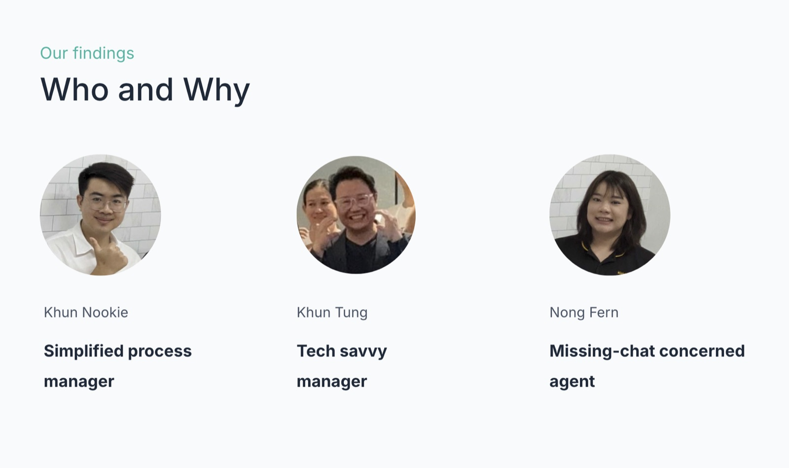
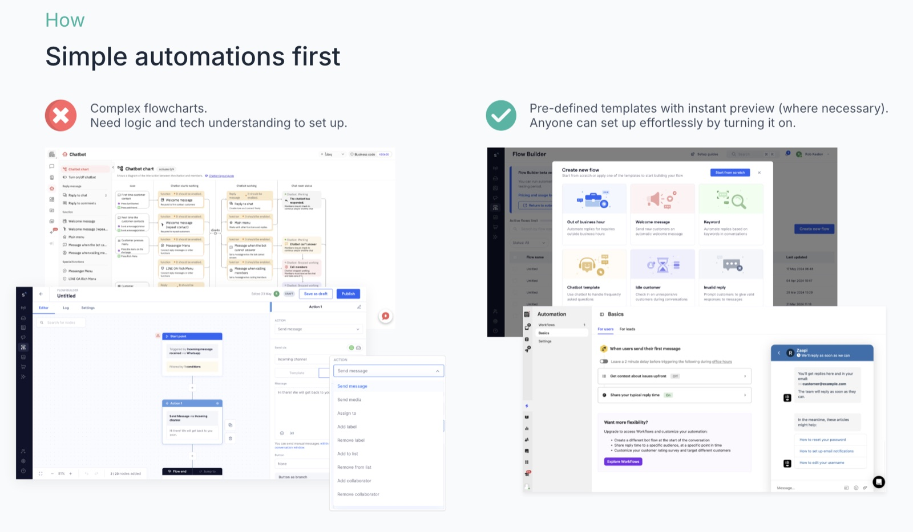
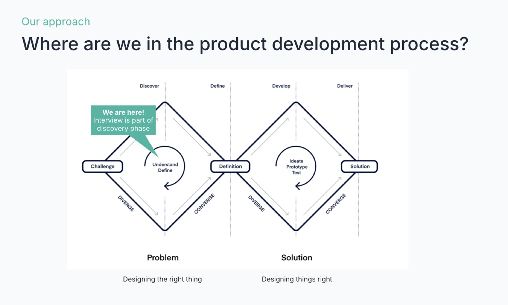
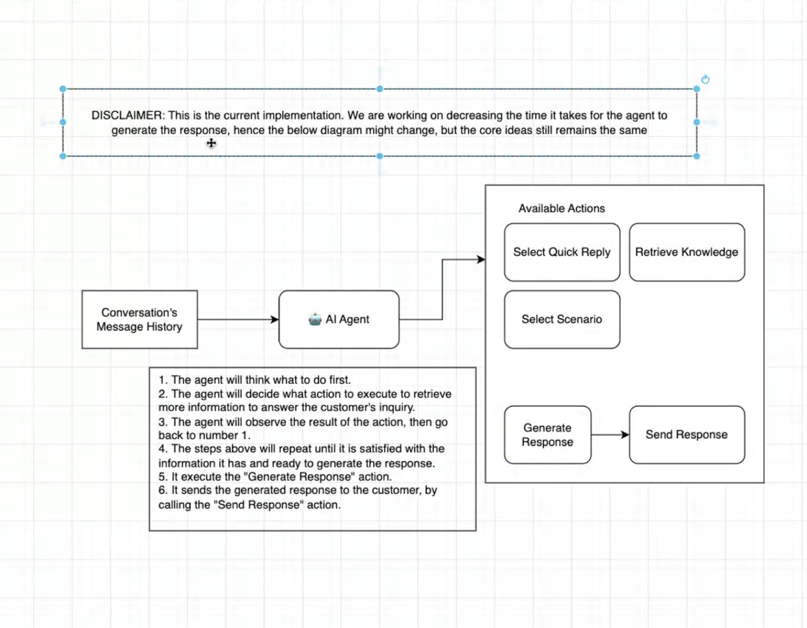
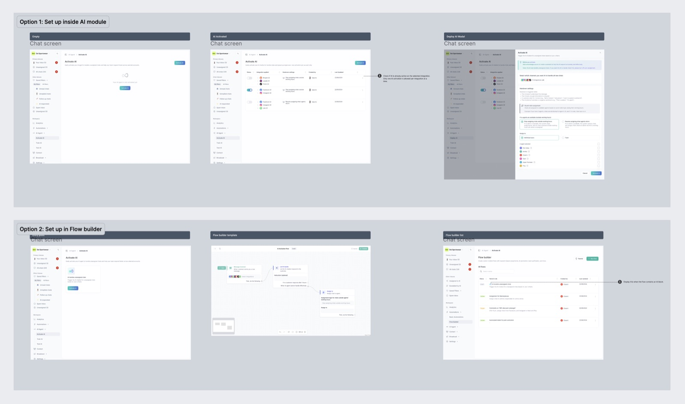
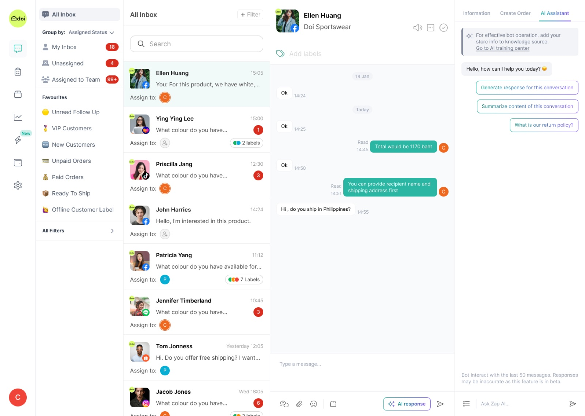
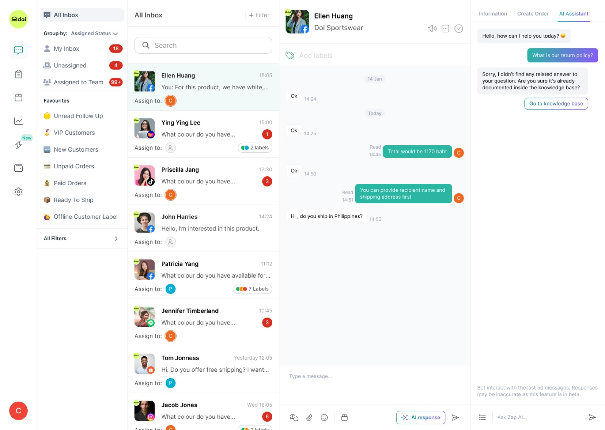
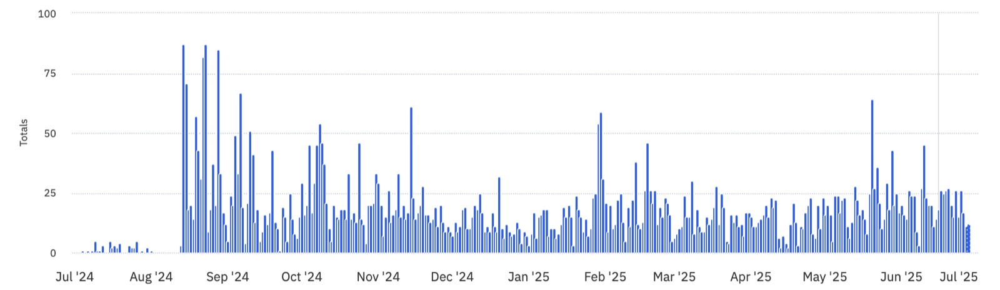
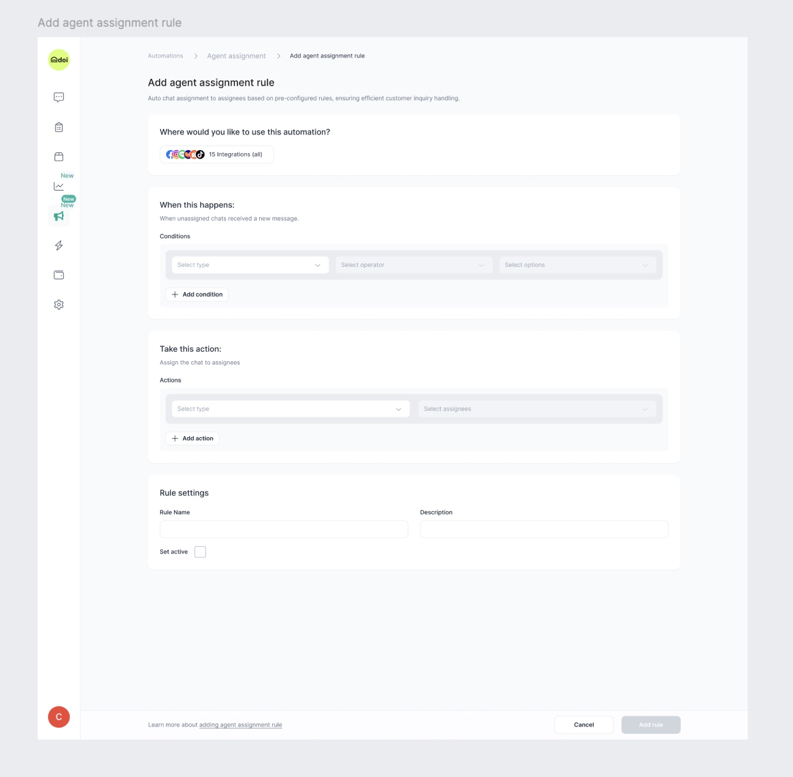
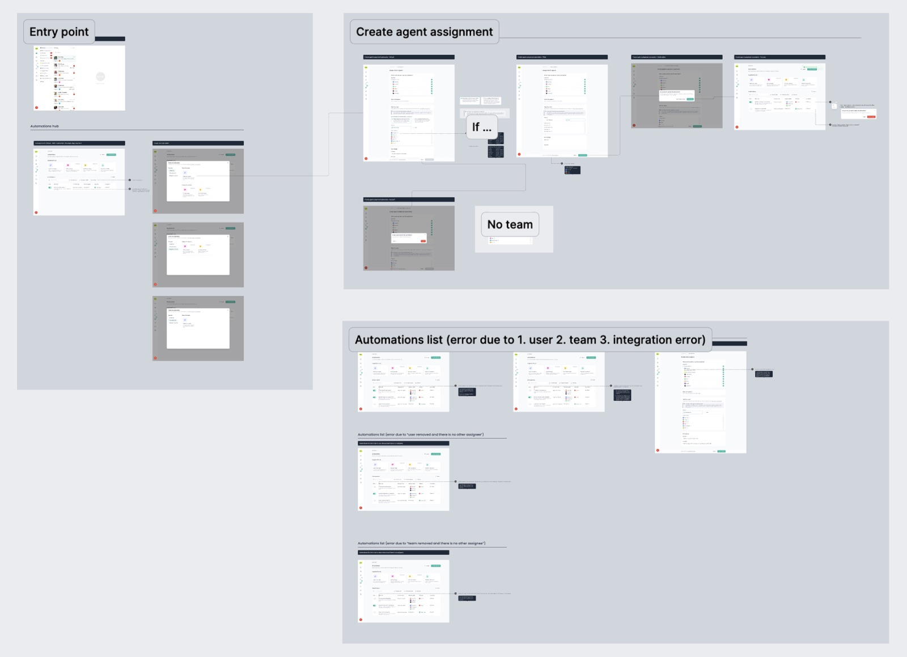

Designed a no-code AI chat agent and conversational UX that uses customer context before answering, cites sources, follows policy, stays human-controlled, and speaks in the brand voice — delivering faster resolutions and scaled support without new hires.
Zaapi's customers run customer service across Shopee, Lazada, LINE, and other channels at once. As chat volume grew, teams couldn't scale headcount to match — but an AI agent that just auto-replied wasn't trustworthy enough to hand real customers to. It needed to know when it actually had enough context to answer, and when to step back.
My job was to design an AI agent experience that customer service teams would actually trust enough to turn on — no-code to set up, transparent in how it reasons, and easy to pull back into human hands.
Interviews with customer service managers and frontline agents surfaced three distinct relationships to automation — from "just turn it on for me" to "let me see exactly how it decides."

The comparable tools on the market required building logic trees to get an automation running. Given Khun Nookie's need to set things up without technical help, the design bet was pre-defined templates with instant preview — anyone could turn one on, not just the tech-savvy manager.


For the AI agent to be trustworthy, its reasoning couldn't be invisible. The agent works through a repeatable loop against the conversation's message history:

Two placements were prototyped and tested: activating AI directly inside the AI Agent module, versus as a block inside the existing Flow Builder. Testing with both simplified-process and tech-savvy managers confirmed the AI module as the primary path — with the Flow Builder route kept for teams who wanted AI as one step inside a larger automation.

A conversational AI agent that cites its sources, follows policy, and stays inside the same chat workspace agents already use — plus the template-driven automation builder that made setup accessible to every persona, not just the technical ones.




Documented in Figma with states, edge cases, and annotated interaction notes — so engineering could build the reasoning loop and every fallback state without guessing.
